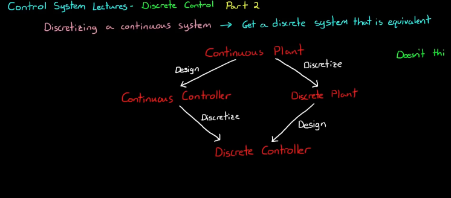

Two ways to approach this problem.

The Discrete-Time Fourier Transform (DTFT) of a discrete-time signal \(x[n]\) is defined as:
\[X(e^{j\omega}) = \sum_{n=-\infty}^{\infty} x[n] e^{-j\omega n}\]This calculates how correlated the time domain signal is with all frequencies.
DTFT works on finite time signals unlike Z transform.
Z transform can be considered as the discrete-time counterpart of the Laplace Transform. The Z-transform of a discrete-time signal \(x[n]\) is defined as:
\[X(z) = \sum_{n=-\infty}^{\infty} x[n] z^{-n}\]where \(z = r*e^{i \omega}\)
An n time delay in z domain would be \(\frac{1}{z^n}\).
Unlike DTFT, Z transform has convergence problems
For instance, for infinite discrete time signal, when there’s no frequency profile, when the probing signal grows at the same rate at which time signal decays, the sum goes to infinity. (See figure below) Even though all subsequent smaller r would also make the sum \(\infty\), the first instance when the sum does not converge is when a perfect correlation has been found. A pole exists here.
For a finite discrete time signal, the sum for z transform always converges. We therefore cannot investigate finite time signals with Z transform without an assumption (signal = 0 for rest of time). In such a case DTFT is useful.

Z domain is the discrete counterpart of the Laplace S domain. However, Z-domain is not a straight discretization of the S-domain, rather Z domain maps S-domain into a unit circle in polar coordinates as explained below.
Z plane is in polar coordinates, while S plane is in Cartesian coordinates.
Since \(z = r*e^{i \omega} = e^{sT} = e^{\sigma + i \omega T}\), the real part \(e^{\sigma T}\) scales the circle. The black line enclosing the unit circle and separates the inside and outside of the circle in the Z plane corresponds to the Imaginary axis in the S plane. \(e^{i \omega T}\) traces a circle.
For a continuous domain, there are infinite frequencies so S plane goes from \(-\infty\) to \(\infty\). However, in discrete systems, frequency only goes from \([-f_{nyquist}, f_{nyquist}]\) on the imaginary axis (real axis on S plane still goes to infinity).
\[f_{nyquist} = f_{sampling} / 2\]Since frequency is represented by the angle between a line and positive x-axis on the Z plane, Nyquist frequency represents the
Defining \(z = e^{sT}\) makes implementing physical hardware easy, since inverse Z transform to difference equation is trivial. This is due to the fact that \(z^{-1}\) corresponds to a single time step delay in time domain for the difference equation.

Note the coefficients of the difference equation correspond to those in the transfer function. This makes the inverse Z transform trivial.
There are 5 different methods:
ZOH (step invariant), FOH (ramp invariant), and Impulse invariant all produce specific time-domain responses.
The method you choose depends on what you are trying to accomplish. (Minimizing the loss of important info.)
Note If the time constant of your system is slow compared to the sample time, all methods are the same. When time constant is bigger, these 5 methods produce different results by prioritizing different aspects.
This method ensures the discrete impulse is the same as the continuous impulse response. Note that Matlab defines impulse differently than Kronecker delta and is scaled by \(T_s\).
Impulse invariant method uses an impulse train as inputs, which is not realistic. ZOH is more realistic. Impulse invariant method would yield erroneous step response.
ZOH holds the value at the previous time step until the next time step is reached. However, ZOH method would yield inaccurate impulse response.

Walkthrough:
ZOH is created by subtracting a delayed step function from another undelayed step function
\[\frac{Y(s)}{V{s}}=\frac{z-1}{z} * \mathcal{Z}(\frac{G(s)}{s})|_{t=kT}\]Model-based design:
Method 1: Discretize the plant -> design discrete controller. We need to use ZOH
Method 2: Design a continuous controller with a continuous plant model -> discretize the controller. ZOH is implied
Notes:
The Bilinear Transform is another method for converting a continuous system into a discrete system.
Bilinear Transform:
\[s = \frac{2}{T} \frac{z-1}{z+1}\]Inverse Bilinear Transform:
\[z = \frac{1+ \frac{T}{2} s}{1 - \frac{T}{2}s}\]**Solving the first formula for s would yield the second one.
Interpretation 1: The bilinear transform is essentially a linear first order approximation of \(z=e^{sT}\) with Taylor Series. However, rather than \(z \approx 1+ ST\), we use a fraction to better estimate the exponential. To do this, we first split \(e^{sT} = e^{\frac{sT}{2}} * e^{\frac{sT}{2}} = \frac{e^{\frac{sT}{2}}}{e^{\frac{-sT}{2}}}\).
Interpretation 2: Trapezoidal Integration.
This method brings every pole in S domain to Z domain.
Bilinear Transform warps the s-plane differently than the Z transform described above. In this mapping the three infinities - \(\pm \infty\) for s-plane imaginary axis and \(-\infty\) for real axis of the s-plane. The imaginarry axis of s-plane wraps around the unit circle. The -1 point is the Nyquist frequency on the z-plane.
\(\omega_d = \frac{2}{T} atan(\omega_a \frac{T}{2})\)
where \(\omega_d\) is the discrete frequency after bilinear transform and \(\omega_a\) is the analog frequency. At low frequencies, \(\omega_a = \omega_d\). As frequency increases, the warping becomes bigger.
This creates an issue for discretizing continuous filter to get discrete filter. To resolve this issue, we can pre-warp the analog frequency.
\(s = \frac{\omega_0}{tan(\frac{\omega_0 T}{2})} \frac{z-1}{z+1}\) where \omega_0 is the frequency specification.
We first design the filter in continuous domain and craft the perfect analog filter. Then use bilinear transform to deploy the filter on a digital computer.
Step 1: Design the filter in continuous domain
Step 2: Pre-warp the critical frequency \(\omega_0\)
Step 3: Use bilinear transform to convert the continuous filter to discrete filter.